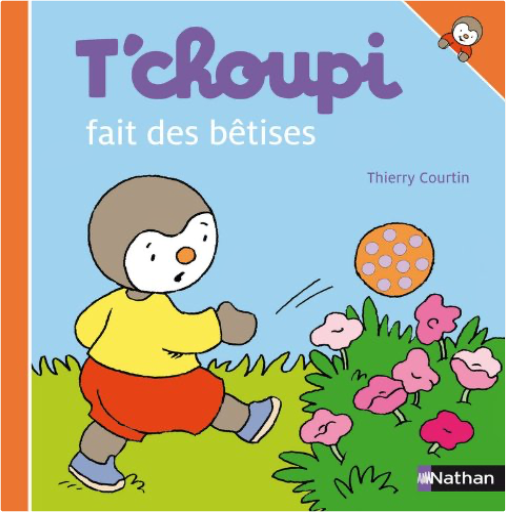
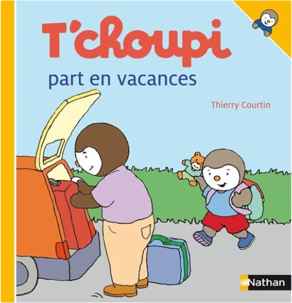

t'choupi, tome 39 : ne veut pas se coucherthierry courtin t'choupi, tome 39 : ne veut pas se coucherthierry courtin  Tchoupi, l\ ami des petits Chaque titre aborde une situation de la vie quotidienne de T\ choupi : ses grands bonheurs, ses petits soucis. Tchoupi a peur des... t'choupi, tome 41 : fait des bêtisesthierry courtin T\ choupi, l\ ami des petits ! Aujourd\ hui T\ choupi ne fait que des bêtises : il tire au ballon dans les fleurs de maman, maquille sa petite sœur avec des feutres et d... t'choupi, tome 42 : part en vacancesthierry courtin NEUF JAMAIS OUVERT.EXP RAPIDE ET SOIGNEE.. Avertissement par e-mail de l'envoi du colis |


 Made with Delicious Library
Made with Delicious LibraryNancy, State zipflap congrotus delicious library Thomas, Julien